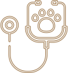
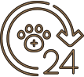
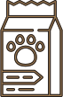

Питомцы
Все представители нашего питомника имеют ветеринарный паспорт
с отметками о прививках и документ с родословной
Особенности породы
Мейн-Кун - это порода, которая вызывает к себе уважение. Приобретая в
свой дом этого питомца,
вы получите умное животное, которому нет равных
Легко уживается в семьях с
детьми или другими животными
Внешний вид этой кошки
похож на дикую рысь
Выполняет команды как
дрессированная собака
Вес может достигать
12 кг, а длина 1 м
Почему именно мы?
Приобретая животное в нашем питомнике, вы получите
-

Бесплатное ветеринарное
обслуживание 5 лет -

Консультирование по любому
вопросу 24 часа в сутки -

Индивидуальный подбор
питания для вашего кота
Об уходе за Мейн-Куном
Шерсть
Мы разработали 8 правил, следуя которым, шерсть вашего
кота всегда будет блестящей, мягкой и послушной
Уши и глаза
Владельцам котов необходимо регулярно осматривать
ушки и
глазасвоих питомцев, ведь это может быть
признаками
заболевания
Когти
Нужно ли стричь когти? Это мы и выясним, плюс ко всему
расскажем как подобрать идеальную когтеточку
Питание
В нашем питомнике существует два подхода: натуральное
питание и питание промышленными кормами, но выбирать
только вам
Наша команда
Все сотрудники нашего питомника дипломированые специалисты
в области фелинологии и ветеринарии

Вопрос-Ответ
Мы ответим на самые популярные ваши вопросы
С какого возраста можно забирать котенка из питомника?
Есть важная причина, почему котенка стоит забирать домой только
после трех месяцев, — это вакцинация. Первые прививки животному
делают в возрасте 8 недель. Ревакцинация проводится через 3–4
недели. То есть котенок, покидающий дом позднее 12 недель,
максимально защищен от различных вирусов и инфекций
Так что, чтобы в дома появился психически и физически здоровый
котенок, игривый, жизнерадостный, самостоятельный и воспитанный,
не
спешите забирать его от кошки-мамы раньше трех месяцев.
Как зарезервировать котенка?
Можно ли купить кота, если я живу в другом городе?
Как подготовить дом к приему нового питомца?
Отзывы
Серёжа Попов
Я выражаю огромную благодарность вашему питомнику.
Мой Феликс невероятно умен и воспитан. Огромным плюсом
питомника является возможность консультироваться
в любое время